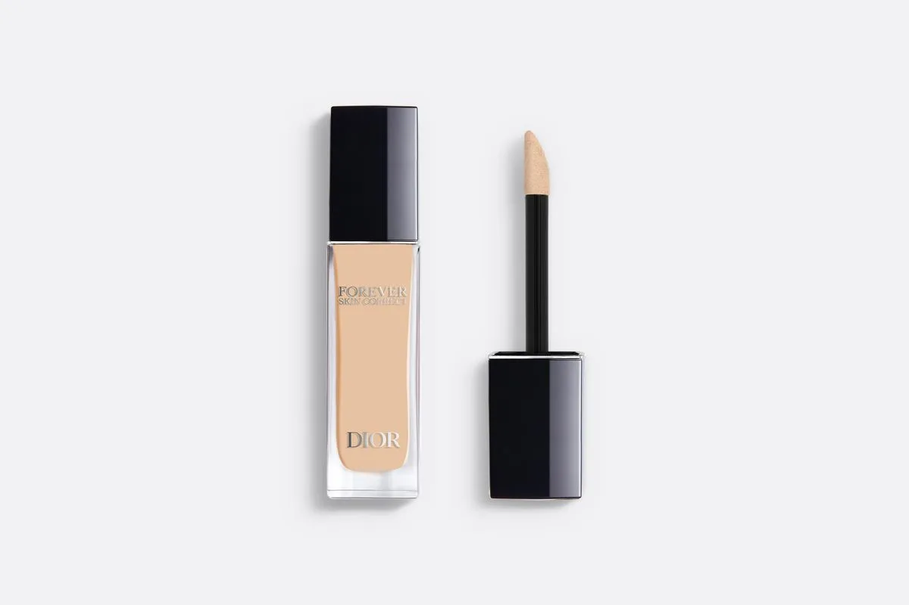
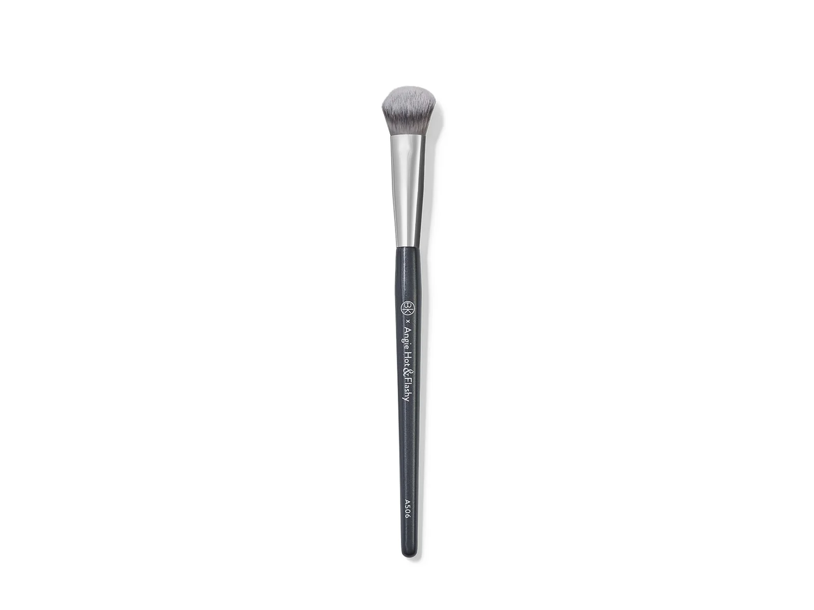
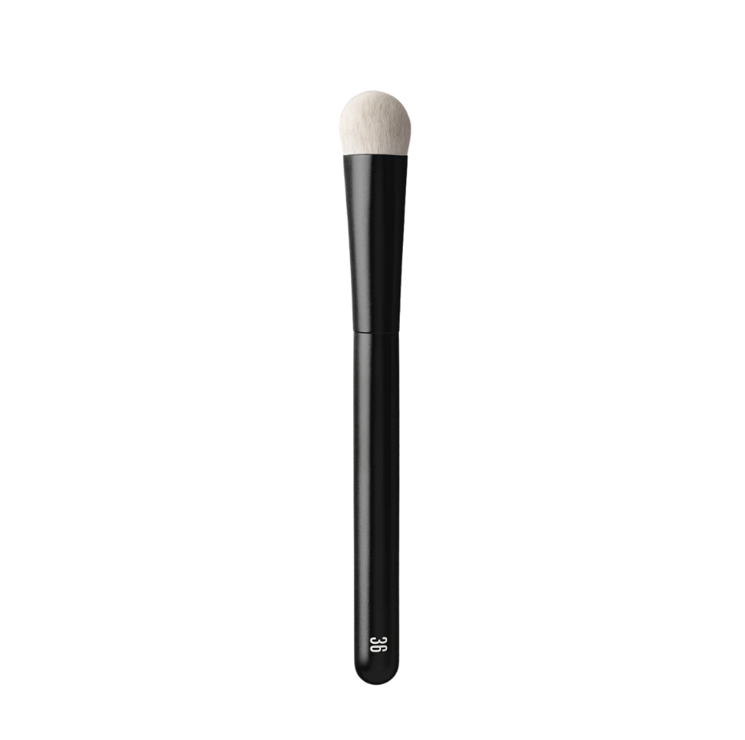
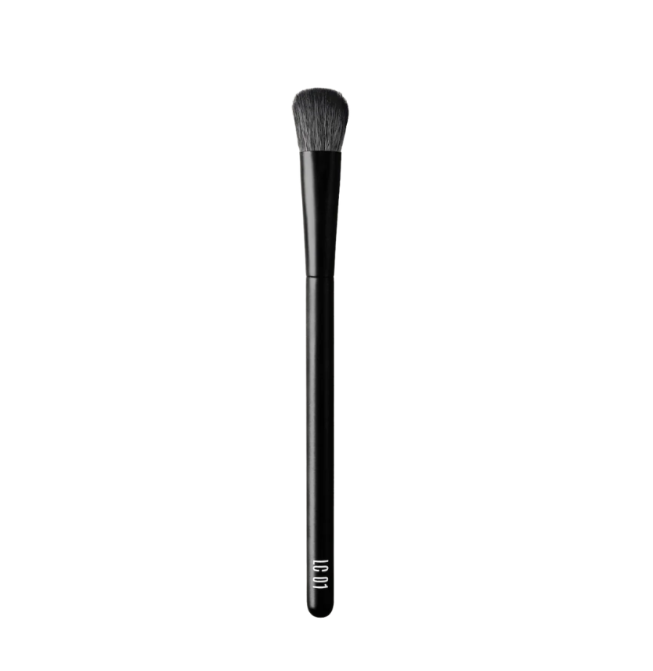
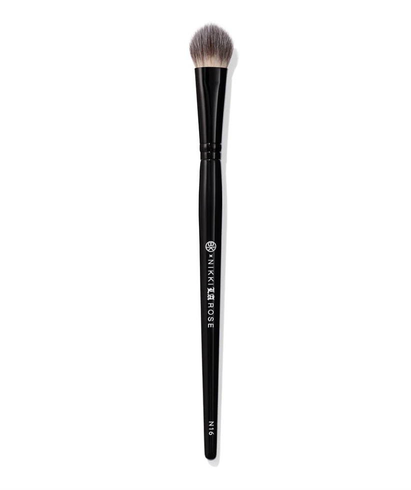
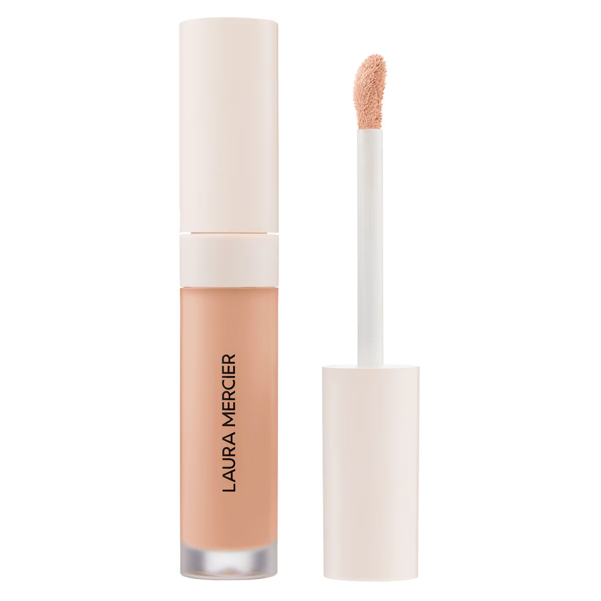
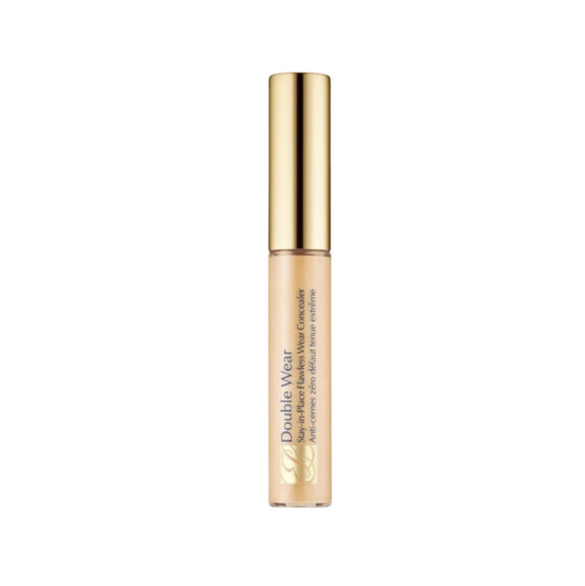

Dior
Forever Skin Correct
Cores · 2 Neutral · 2 Warm
Corretivo de olhos de alta cobertura.
Pincéis para aplicar

BK BeautyA506
Rephr36
RephrLC 01
BK BeautyN16Fórmulas para iluminar e corrigir com controle, preservando a textura natural da região dos olhos.

Corretivo de olhos de alta cobertura.

BK BeautyA506
Rephr36
RephrLC 01
BK BeautyN16
Textura ultraleve e hidratante.

Fórmula leve, construível e de cobertura média.

Cobertura média e acabamento luminoso.
As quatro opções funcionam com os corretivos acima; a escolha muda a precisão do acabamento.
Para aplicação pontual e controlada.
Para esfumar corretivo com suavidade.
Para trabalhar regiões menores do rosto.
Para corretivo e acabamento preciso em áreas menores.